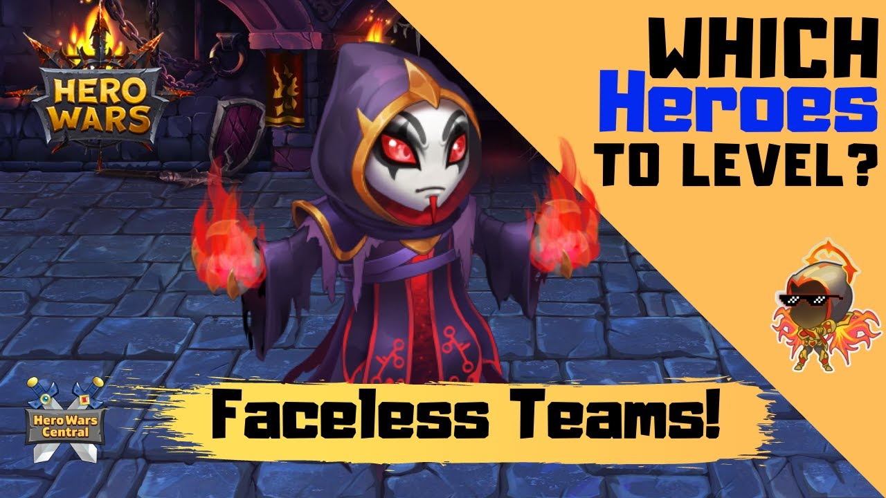
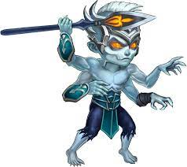

Hero Wars - Best Heroes
 Corvus is one of the best tanks in Hero Wars . His ability Strike of the Damned deals a lot of damage . He has good abilities and overall is a balanced hero.
Corvus is one of the best tanks in Hero Wars . His ability Strike of the Damned deals a lot of damage . He has good abilities and overall is a balanced hero.

Faceless is said to be the strongest hero in Hero Wars. His ability Doppelganger copies the ability of the hero who has used his ability last.

Dante is one of the best assasins in Hero Wars. His Instrument of Fate is very destructive ad wipes out all the enemies.
Dante's abilities are good and he is a very powerful hero.